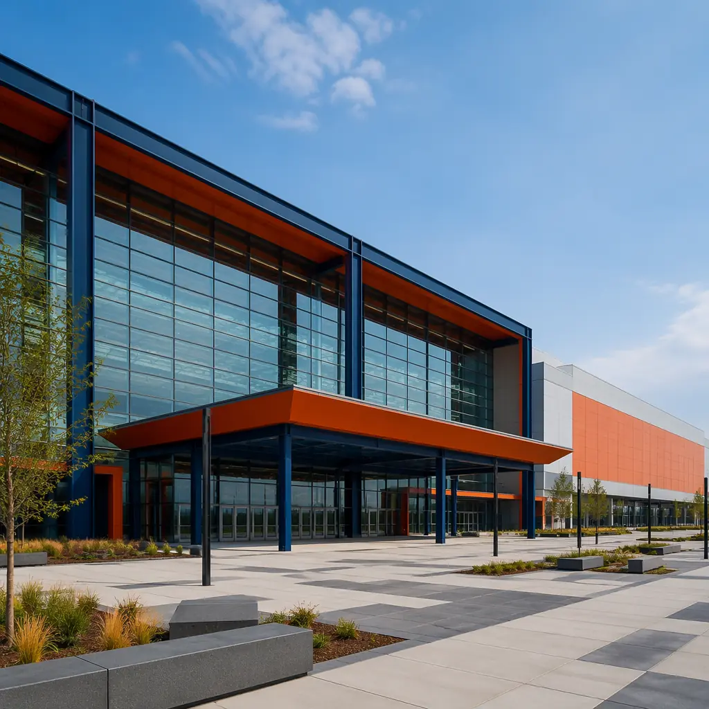
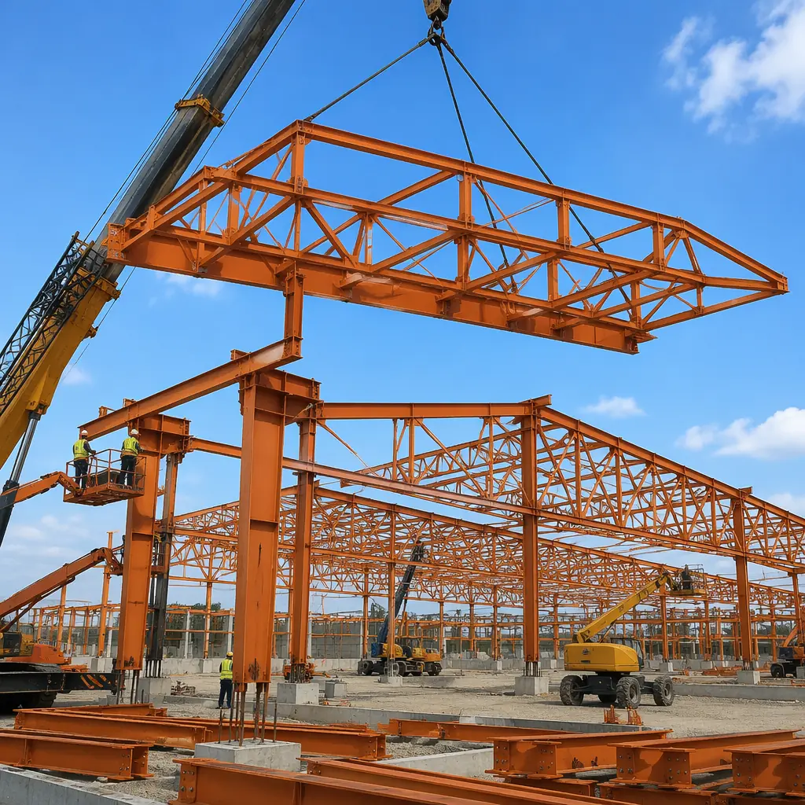
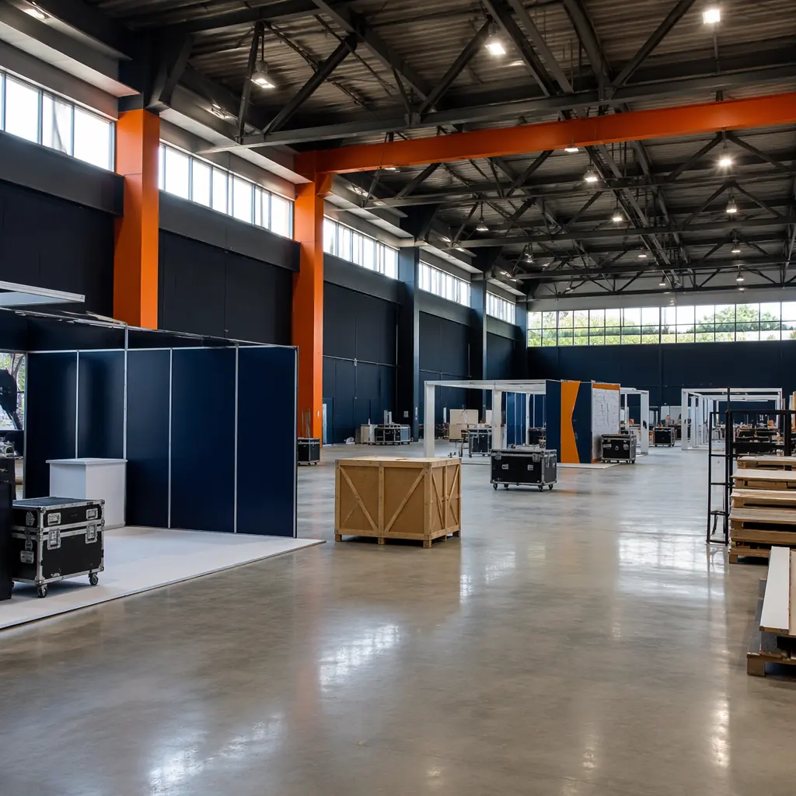
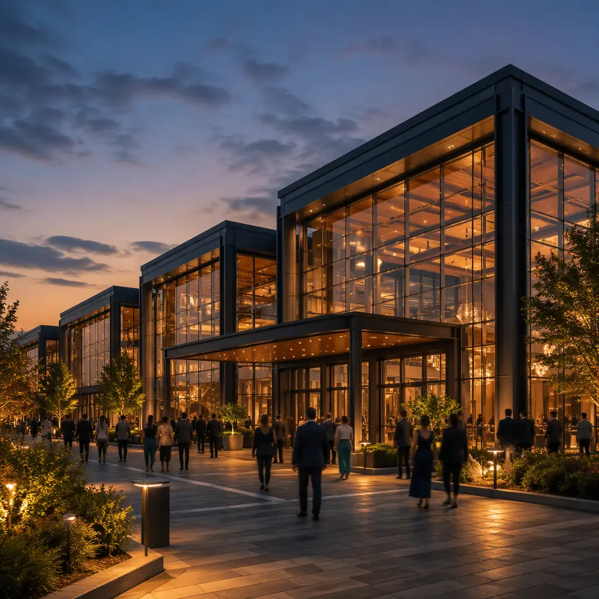
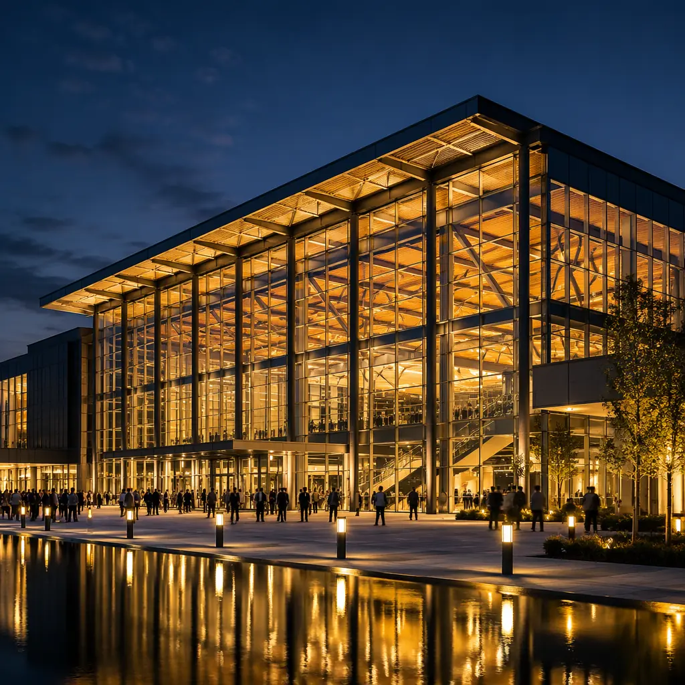

Convention centers present a structural paradox: they require the largest clear spans in commercial construction — 25 to 40 meters without columns to accommodate exhibition booths, banquet seating, and stage sightlines — yet their construction schedules are among the tightest because bookings are contracted years in advance. A convention center that opens 6 months late does not merely delay revenue; it triggers force majeure clauses with event organizers who have already sold tickets. Modular construction resolves this paradox by manufacturing large-span structural modules in a factory while site foundations are poured in parallel, compressing the total delivery timeline from 24–36 months to 14–20 months for a 100,000 sq ft facility.

The Structural Challenge — Clear Spans Beyond Typical Modular Limits
Standard modular construction modules are 3.6–4.2 meters (12–14 feet) wide, limited by transportation regulations for oversize loads. Convention center exhibition halls require column-free spaces of 25–40 meters. The solution is not to build larger modules — it is to use modular construction for the perimeter and support areas (lobbies, meeting rooms, restrooms, mechanical rooms, catering kitchens) and to integrate factory-fabricated long-span roof trusses that are assembled on-site in weeks rather than months.
MODURA's convention center system uses three structural strategies depending on the span requirements:
| Span Range | Structural System | Module Content | On-Site Assembly |
|---|---|---|---|
| 18–25 m (60–82 ft) | Steel moment frame with integrated truss modules | Perimeter walls, meeting rooms, restrooms, MEP risers | Roof truss assembly & lift: 3–4 weeks |
| 25–35 m (82–115 ft) | Hybrid: modular perimeter + site-assembled long-span trusses | All enclosed spaces pre-finished in factory; roof truss segments factory-welded | Truss bolting & deck installation: 5–7 weeks |
| 35–50 m (115–165 ft) | Modular perimeter + site-fabricated space frame or cable truss | Support spaces, loading docks, concourse modules | Space frame erection: 8–10 weeks |
The key to modular's schedule advantage in convention centers is that the 60–70% of the building that is NOT the exhibition hall — the meeting rooms, restrooms, concourses, loading docks, catering kitchens, and administrative offices — is fully finished in the factory during the same months that foundations and long-span trusses are prepared on-site. Traditional construction sequences these activities: foundations first, then structure, then enclosures, then interiors. Modular construction runs them in parallel.

Cost Comparison — Modular vs Traditional Convention Centers
Convention center construction in 2026 costs $380–$550 per square foot for traditional delivery, with exhibition hall space at the lower end (simpler finishes, higher structural cost per square foot) and conference/meeting space at the higher end (more partition walls, higher MEP density, premium finishes). Modular delivery for a representative 80,000 sq ft facility with 35,000 sq ft of exhibition hall and 45,000 sq ft of support spaces produces the following comparison:
| Cost Component | Traditional | Modular | Delta |
|---|---|---|---|
| Exhibition hall structure (long-span) | $8.75M | $7.0M | −$1.75M (factory-fab trusses) |
| Support spaces (45,000 sq ft × $420/sq ft) | $18.9M | $16.2M | −$2.7M |
| MEP systems (HVAC for large volumes) | $6.4M | $5.8M | −$600k |
| General conditions (30 vs 20 months) | $3.6M | $2.4M | −$1.2M |
| Total Project Cost | $37.6M | $31.4M | −$6.2M (16.5%) |
The 16.5% cost advantage for modular convention centers is larger than the typical modular premium/reserve pattern seen in smaller building types because convention centers combine two favorable characteristics: a high proportion of repetitive support spaces (meeting rooms, restrooms, concourses) that benefit from factory production, and long-span structural systems where factory-welded truss connections eliminate the most expensive site labor — certified structural welders working at height.
Event Revenue Acceleration. A 100,000 sq ft convention center hosting 20 major events per year at an average facility rental of $45,000 per event plus $12 per square foot in ancillary revenue (concessions, parking, services) generates approximately $2.1 million in annual net revenue. Opening 8 months earlier captures approximately $1.4 million in revenue that a traditional build would forfeit entirely. For municipalities and convention authorities where event bookings are contracted 2–3 years in advance, the revenue certainty that modular's compressed schedule provides is often more valuable than the direct construction savings.

MEP Systems for Large-Volume Convention Spaces
Exhibition halls present HVAC challenges that smaller buildings do not. Conditioning 35,000 sq ft of open space with 10–14 meter ceiling heights requires air distribution systems that can deliver comfort at occupied level (0–2 meters) without conditioning the entire volume to the same temperature. The conventional approach — overhead ductwork with high-throw diffusers — wastes 30–40% of HVAC energy heating or cooling air that never reaches occupants.
MODURA's convention center MEP strategy uses three systems that modular construction makes easier to integrate:
- Underfloor Air Distribution (UFAD). Conditioned air is delivered through floor diffusers in the exhibition hall slab, creating a stratified thermal environment where only the occupied zone (0–3 meters) is conditioned. This reduces HVAC energy consumption by 25–35% compared to overhead systems and can be pre-plumbed in the modular floor deck during factory assembly. UFAD also simplifies exhibition booth power and data connections — floor boxes are integrated into the modular deck grid rather than cored into a site-poured slab.
- Factory-Integrated MEP Risers. In a traditional convention center, MEP risers are built stick-by-stick on site: plumbers, electricians, and HVAC contractors working sequentially in vertical shafts. Modular construction pre-installs these risers in the factory within the module walls, tested and commissioned before the modules leave the factory. The number of on-site MEP connections between modules is reduced from hundreds of individual pipe and conduit runs to a few dozen pre-aligned quick-connect points.
- Daylight Harvesting with Clerestory Modules. Exhibition halls benefit disproportionately from natural light because they operate primarily during daylight hours. Modular wall panels can incorporate factory-glazed clerestory windows at 3–5 meter heights, coordinated with the structural module grid so that glazing aligns perfectly with the long-span truss bays. Site-built clerestory installation typically involves separate framing, glazing, and flashing subcontractors whose work must be precisely coordinated — a coordination burden that factory assembly eliminates.
Convention centers are among the few building types where the general conditions line item — site trailers, fencing, temporary power, supervision — exceeds 10% of the total construction budget. Shortening the site schedule from 30 months to 20 months removes an entire year of general conditions costs. That alone covers the modular premium and leaves margin.
Acoustic Isolation for Multi-Event Operations
A convention center operating three simultaneous events — a trade show in Hall A, a corporate general session in Hall B, and a wedding reception in the ballroom — cannot function if sound bleeds between spaces. The acoustic isolation requirement for divisible convention spaces is STC 55–60 between halls, which is higher than the STC 50 typical for office demising walls because convention events generate 85–95 dBA of amplified sound.
Modular construction's inherent double-wall condition — each module has its own wall assembly, creating an air gap between adjacent modules — delivers STC 58–62 without additional acoustic treatment. Traditional construction requires staggered-stud walls, resilient channels, and multiple layers of gypsum to reach STC 55, adding $8–$12 per square foot of wall area. Modular achieves the same or better acoustic performance as a byproduct of the module separation, not as a premium upgrade. This aligns with the acoustic findings in our modular building acoustics guide.

Future-Proofing — Expansion and Reconfiguration
Convention centers are among the most frequently expanded building types. A facility designed for 80,000 sq ft today may need to reach 120,000 sq ft within 10 years as the destination market grows. Traditional expansion requires demolishing end walls, extending foundations, matching existing structural systems, and hoping the original contractor's as-built drawings are accurate. Modular construction simplifies expansion because modules can be added to the end of the existing structure with factory-fabricated connections that were designed into the original module layout from day one.
MODURA's convention center system includes an expansion kit: standardized connection details at the gable ends, pre-engineered foundation extensions, and MEP riser capacity sized for the future build-out. When the expansion is approved, new modules are fabricated to the same specifications as the original building and connected in 4–6 months rather than the 12–18 months a traditional expansion would require. This is consistent with the expansion approach detailed in our modular building additions guide.
For municipalities requiring auditorium seating in addition to flat-floor exhibition space, modular university building principles apply: tiered seating modules with integrated sightline geometry can be factory-fabricated and connected to the main exhibition structure. The MEP scope for convention centers also overlaps significantly with modular MEP systems integration, where factory pre-installation of HVAC, plumbing, and electrical risers eliminates the longest-lead site coordination items.
At MODURA, our commercial projects team provides concept-level feasibility assessments for convention centers within 15 business days of receiving a site plan and program brief. The assessment includes structural system options based on span requirements, a modular/non-modular scope split, preliminary budget pricing, and a milestone schedule showing the parallel factory-site workflow that compresses the total timeline by 8–12 months compared to traditional delivery.
